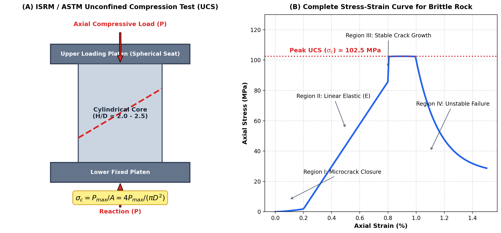

Q121: Unconfined Compressive Strength (UCS): The Primary Index Property of Building Stones
In engineering geology, rock mechanics, and civil construction, Unconfined Compressive Strength (UCS)—also universally designated as Uniaxial Compressive Strength ($\sigma_c$ or $q_u$)—is universally recognized as the single most important index property of building stones and intact rock material (Bangar, p. 186; ISRM, 1979; ASTM D7012).
Physically, UCS represents the maximum axial compressive stress that a right cylindrical rock core specimen can withstand before suffering total mechanical collapse or shear/splitting rupture when subjected to unconfined uniaxial loading (i.e., under zero lateral confining stress: $\sigma_2 = \sigma_3 = 0$).

Why UCS is the Preeminent Engineering Index Property
Building stones used in heavy civil engineering structures—such as dam abutments, bridge piers, monument foundations, architectural ashlar masonry, and retaining walls—are predominantly subjected to enormous downward compressive stresses caused by gravity and structural superstructures. Intact rock exhibits distinct mechanical asymmetries:
- Enormous Compressive vs. Weak Tensile Strength: Rocks are natural aggregates of interlocking or cemented minerals. Under compression, mineral grains are forced tightly against one another, mobilizing high frictional and cohesive resistance. In contrast, rocks are extremely weak in tension ($\sigma_t \approx \frac{1}{10} \text{ to } \frac{1}{20} \sigma_c$) and moderate in shear ($\tau \approx \frac{1}{6} \text{ to } \frac{1}{8} \sigma_c$). Because structural stones are purposefully detailed in masonry to bear compressive loads, $\sigma_c$ dictates the ultimate load-bearing capacity.
- Universal Benchmark in Rock Mass Classification: All major empirical rock engineering rating systems use intact UCS as their fundamental baseline parameter:
- Bieniawski's Rock Mass Rating (RMR): Up to 15 rating points (out of 100) are assigned directly based on intact rock UCS ($\sigma_c > 250\text{ MPa}$ gets max score).
- Hoek-Brown Failure Criterion: The non-linear failure criterion for intact and jointed rock masses is formulated directly around intact UCS ($\sigma_{ci}$): $\sigma_1' = \sigma_3' + \sigma_{ci} \left(m_b \frac{\sigma_3'}{\sigma_{ci}} + s\right)^a$.
- Deere-Miller Engineering Classification: Classifies rock into strength classes A through E based strictly on UCS and modulus ratio ($E_t / \sigma_c$).

ISRM / ASTM D7012 Standard Specifications
To ensure reproducible and standardized test results free from frictional platen end-effects, strict testing protocols are enforced:
- Specimen Shape: Right circular cylinder drilled from intact core (typically $NX$ core size, diameter $D \approx 54\text{ mm}$, or minimum diameter $\ge 47\text{ mm}$ with $D$ at least 10 times the largest mineral grain diameter).
- Aspect Ratio (Length to Diameter, $L/D$): Must be between $2.0:1$ and $2.5:1$ (typically $L/D = 2.0$). If $L/D < 2.0$, platen friction confines the core ends, artificially increasing measured strength (creating a rigid cone of confinement). If $L/D > 2.5$, Euler column buckling instabilities and lateral deflection can prematurely trigger failure.
- End Preparation Tolerance: End bearing faces must be ground flat within $0.02\text{ mm}$ and perpendicular to the longitudinal core axis within $0.05^\circ$ ($1\text{ mm}$ per $1\text{ m}$) to avoid eccentric stress concentrations and premature point-loading fractures.
- Loading Rate: Continuous axial loading applied smoothly at a stress rate between $0.5\text{ to } 1.0\text{ MPa/s}$, ensuring failure occurs within $2\text{ to } 15\text{ minutes}$.

The unconfined compressive strength of rocks spans three orders of magnitude, ranging from $< 1\text{ MPa}$ in poorly consolidated claystones to $> 300\text{ MPa}$ in dense quartzite and dolerite:
| ISRM Grade | Description | UCS Range ($\sigma_c$, MPa) | Typical Geological Examples | Field Identification Criteria |
|---|---|---|---|---|
| R6 | Extremely Strong | $> 250$ | Fresh Quartzite, Dense Basalt, Dolerite, Chert | Specimen can only be chipped with repeated heavy blows of geological hammer. Rings like steel. |
| R5 | Very Strong | $100 - 250$ | Fresh Granite, Gabbro, Gneiss, Massive Limestone | Requires many blows of geological hammer to break intact core specimen. |
| R4 | Strong | $50 - 100$ | Hard Sandstone, Marble, Slate, Schist | Hand specimen can be broken with a single firm blow of hammer. |
| R3 | Medium Strong | $25 - 50$ | Siltstone, Porous Sandstone, Chalk, Coal | Cannot be scraped or peeled with pocket knife; specimen fractures under firm hammer blow. |
| R2 | Weak | $5 - 25$ | Claystone, Weathered Shale, Soft Marl | Can be peeled with pocket knife with difficulty; shallow indentations made with hammer pick. |
| R1 / R0 | Very Weak / Extremely Weak | $< 5$ | Heavily altered rock, stiff clay-shale, talc schist | Crumbles under firm thumb pressure or easily gouged by thumbnail. |
- (A) Confined
- (B) Drained
- (C) Undrained
- (D) Unconfined
Confined compressive strength refers to the axial compressive strength measured under a non-zero confining pressure ($\sigma_2 = \sigma_3 > 0$) inside a high-pressure triaxial Hoek cell or Karman cell. While triaxial testing is vital for deep underground tunneling, borehole stability, and tectonic modeling, it requires complex, expensive triaxial cells, high-pressure hydraulic pumps, and impervious membrane sleeving. Consequently, confined compressive strength is never used as a routine, rapid index property for classifying building stones in standard engineering practice (IS: 9143; Bangar, p. 186).
"Drained" strength is a specific test condition taken from geotechnical soil mechanics and porous weak rock testing (such as saturated clay-shale or porous sandstone). In a drained test, pore-water is allowed to escape freely under slow loading rates so that excess pore-water pressure ($\Delta u$) dissipates to zero ($u = 0, \sigma' = \sigma$). In hard, crystalline building stones (granite, basalt, quartzite), permeability is virtually negligible and tests are conducted in ambient dry or naturally moist conditions without pore-pressure drainage control. It is a soil mechanics behavioral state, not an index property of stones.
"Undrained" compressive strength ($S_u$ or $c_u$) is another classical soil mechanics parameter, defined for saturated cohesive soils (clays, silts) loaded so rapidly that pore-water cannot escape ($\Delta u \ne 0$). Undrained shear/compressive strength is fundamental for short-term slope and foundation stability in clays, but has no direct application as a fundamental index property for structural building stones.
Unconfined Compressive Strength (UCS, $\sigma_c$) is determined by applying a uniaxial compressive load to an unjacketed cylinder without any lateral support until failure ($\sigma_3 = 0$). It is universally designated as the most important index property of building stones because:
- It directly reflects the stone's capacity to support superincumbent vertical structural loads in masonry pillars, foundations, dam basements, and bridge piers.
- It is straightforward, highly standardized (ISRM, ASTM D7012, IS: 9143), and readily reproducible in any basic rock mechanics laboratory.
- It serves as the core input parameter for every major engineering classification system (RMR, Q-system, GSI, Hoek-Brown criterion).
| Mechanical Property | Stress State | Testing Apparatus | Typical Magnitude (Granite) | Primary Engineering Application |
|---|---|---|---|---|
| Unconfined Compressive Strength (UCS) | $\sigma_1 = \sigma_c, \sigma_2 = \sigma_3 = 0$ | Uniaxial Compression Testing Frame | $150 - 250\text{ MPa}$ | Primary Index Property; foundation bearing capacity, stone masonry, RMR & Q ratings. |
| Confined (Triaxial) Compressive Strength | $\sigma_1 > \sigma_2 = \sigma_3 > 0$ | Triaxial Hoek Cell + Hydraulic Intensifier | $300 - 600\text{ MPa}$ ($\text{at } \sigma_3 = 30\text{ MPa}$) | Deep tunneling, deep underground mines, petroleum boreholes, rock burst risk. |
| Tensile Strength ($\sigma_t$) | $\sigma_1 > 0 \text{ (axial)}, \sigma_3 < 0 \text{ (tensile)}$ | Brazilian Disc Test or Direct Pull Rig | $7 - 15\text{ MPa}$ ($\approx \frac{1}{15} \text{ UCS}$) | Roof sag in underground excavations, hydraulic fracturing, blasting spallation. |
| Transverse (Flexural) Strength | Bending: top compression, bottom tension | 3-Point or 4-Point Bending Frame | $12 - 25\text{ MPa}$ ($\approx 1.5 - 2 \times \sigma_t$) | Stone lintels, flagstones, bridge floorings, cantilevered corbels. |
| Point Load Strength Index ($I_{s(50)}$) | Point-load induced tensile splitting | Portable Point Load Tester (conical platens) | $6 - 10\text{ MPa}$ ($\text{UCS} \approx 20 - 24 \times I_{s(50)}$) | Rapid field index testing, drill core logging, indirect UCS estimation. |
A standard cylindrical core of fresh charnockite with diameter $D = 54\text{ mm}$ and length $L = 108\text{ mm}$ is tested in uniaxial compression. The peak load recorded by the digital load cell at failure is $412.4\text{ kN}$. Calculate the unconfined compressive strength ($\sigma_c$) in $\text{MPa}$ and classify the rock according to ISRM standards.
1. Calculate the cross-sectional area $A_0$: $$A_0 = \frac{\pi}{4} D^2 = \frac{\pi}{4} (0.054\text{ m})^2 = 2.2902 \times 10^{-3}\text{ m}^2 = 2290.2\text{ mm}^2$$ 2. Compute the unconfined compressive strength $\sigma_c$: $$\sigma_c = \frac{P_{\text{max}}}{A_0} = \frac{412.4 \times 10^3\text{ N}}{2290.2\text{ mm}^2} = 180.07\text{ N/mm}^2 = 180.1\text{ MPa}$$ 3. Classification: According to ISRM strength grades ($100 - 250\text{ MPa}$), this charnockite belongs to Grade R5: Very Strong Rock.
Due to core discing, a sandstone core could only be prepared with diameter $D = 50\text{ mm}$ and length $L = 60\text{ mm}$ (aspect ratio $L/D = 1.20$). When crushed, it sustained a peak load of $157.1\text{ kN}$. Determine: (a) the measured unconfined strength, and (b) the corrected standard UCS ($\sigma_{c(\text{standard})}$ at $L/D = 2.0$) using the ISRM conversion formula.
1. Measured strength $\sigma_{c(\text{meas})}$: $$A = \frac{\pi}{4} (50\text{ mm})^2 = 1963.5\text{ mm}^2$$ $$\sigma_{c(\text{meas})} = \frac{157.1 \times 10^3\text{ N}}{1963.5\text{ mm}^2} = 80.01\text{ MPa}$$ 2. Apply ISRM aspect ratio correction formula: $$\sigma_{c(\text{standard})} = \frac{\sigma_{c(\text{meas})}}{0.778 + 0.222 \left(\frac{D}{L}\right)}$$ Here $D/L = 50 / 60 = 0.8333$: $$\text{Denominator} = 0.778 + 0.222 (0.8333) = 0.778 + 0.1850 = 0.9630$$ $$\sigma_{c(\text{standard})} = \frac{80.01}{0.9630} = 83.08\text{ MPa}$$ Notice: Because platen end-confinement artificially increases apparent strength for stubby specimens, standard conversion normalizes the value to the unconfined state.
A diametral point load test is performed on an $NX$ core of granite ($D = 54\text{ mm}$). The failure load is $P = 18.5\text{ kN}$. Calculate: (a) the uncorrected point load strength $I_s$, (b) the size-corrected point load index $I_{s(50)}$, and (c) the estimated UCS ($\sigma_c$) using the standard Bieniawski correlation factor ($C = 24$).
1. Equivalent core diameter $D_e^2 = D^2 = 54^2 = 2916\text{ mm}^2$: $$I_s = \frac{P}{D_e^2} = \frac{18.5 \times 10^3\text{ N}}{2916\text{ mm}^2} = 6.344\text{ MPa}$$ 2. Size correction factor $F = (D_e / 50)^{0.45} = (54 / 50)^{0.45} = (1.08)^{0.45} = 1.0353$: $$I_{s(50)} = F \times I_s = 1.0353 \times 6.344 = 6.568\text{ MPa}$$ 3. Estimated UCS via empirical correlation ($\sigma_c = 24 \times I_{s(50)}$): $$\sigma_c = 24 \times 6.568\text{ MPa} = 157.63\text{ MPa}$$
A monumental ashlar masonry pillar of cross-section $1.2\text{ m} \times 1.2\text{ m}$ is constructed using granite blocks having a laboratory UCS of $\sigma_c = 140\text{ MPa}$. If the building code mandates a safety factor of $\text{FoS} = 15$ against crushing failure (accounting for mortar joints and scale effects), determine: (a) the allowable working compressive stress, and (b) the maximum permissible axial vertical load the pillar can support.
1. Allowable working compressive stress $\sigma_{\text{allow}}$: $$\sigma_{\text{allow}} = \frac{\sigma_c}{\text{FoS}} = \frac{140\text{ MPa}}{15} = 9.333\text{ MPa} = 9.333 \times 10^6\text{ N/m}^2$$ 2. Cross-sectional area of pillar: $$A = 1.2\text{ m} \times 1.2\text{ m} = 1.44\text{ m}^2$$ 3. Maximum permissible vertical axial load $P_{\text{perm}}$: $$P_{\text{perm}} = \sigma_{\text{allow}} \times A = (9.333 \times 10^6\text{ N/m}^2) \times 1.44\text{ m}^2 = 1.344 \times 10^7\text{ N} = 13.44\text{ MN} \approx 13,440\text{ kN}$$
An intact limestone specimen has an unconfined compressive strength $\sigma_{ci} = 90\text{ MPa}$ and Hoek-Brown intact constant $m_i = 10$. In a triaxial test with a cell confining pressure $\sigma_3 = 15\text{ MPa}$, predict the major principal stress at failure ($\sigma_1$) using the Hoek-Brown intact equation: $\sigma_1 = \sigma_3 + \sigma_{ci} \sqrt{m_i \frac{\sigma_3}{\sigma_{ci}} + 1}$.
1. Substitute parameters into the Hoek-Brown intact criterion ($s = 1, a = 0.5$): $$\frac{\sigma_3}{\sigma_{ci}} = \frac{15}{90} = 0.1667$$ 2. Compute the square root term: $$\sqrt{m_i \left(\frac{\sigma_3}{\sigma_{ci}}\right) + 1} = \sqrt{10(0.1667) + 1} = \sqrt{1.6667 + 1} = \sqrt{2.6667} = 1.6330$$ 3. Compute $\sigma_1$: $$\sigma_1 = 15 + 90 \times (1.6330) = 15 + 146.97 = 161.97\text{ MPa}$$ Interpretation: The application of only $15\text{ MPa}$ confining stress increases the rock's compressive capacity from $90\text{ MPa}$ to $162\text{ MPa}$ (an 80% strength increase).
Assuming linear Mohr-Coulomb failure for an intact basalt rock with $\sigma_c = 120\text{ MPa}$ and tensile strength $\sigma_t = 10\text{ MPa}$, derive the internal friction angle $\phi$ and cohesion $c$ assuming $\sigma_c = 2 c \frac{\cos\phi}{1 - \sin\phi}$ and $\sigma_t = 2 c \frac{\cos\phi}{1 + \sin\phi}$.
1. Take the ratio of compressive to tensile strength: $$\frac{\sigma_c}{\sigma_t} = \frac{1 + \sin\phi}{1 - \sin\phi} = \frac{120}{10} = 12$$ 2. Solve for $\sin\phi$: $$1 + \sin\phi = 12 (1 - \sin\phi) \implies 13 \sin\phi = 11 \implies \sin\phi = \frac{11}{13} \approx 0.84615$$ $$\phi = \arcsin(0.84615) \approx 57.8^\circ$$ 3. Calculate cohesion $c$: $$\cos\phi = \sqrt{1 - 0.84615^2} = \sqrt{1 - 0.7160} = \sqrt{0.2840} \approx 0.5329$$ $$\sigma_c = 2 c \frac{\cos\phi}{1 - \sin\phi} \implies 120 = 2 c \frac{0.5329}{1 - 0.84615} = 2 c \frac{0.5329}{0.15385} = 2 c (3.4638) = 6.9276 c$$ $$c = \frac{120}{6.9276} \approx 17.32\text{ MPa}$$
A standard laboratory core of diameter $d_1 = 50\text{ mm}$ yields a mean UCS of $\sigma_{c1} = 100\text{ MPa}$. Using the empirical Hoek-Brown / Bieniawski size-effect equation: $$\sigma_c(d) = \sigma_{c(50)} \left(\frac{50}{d}\right)^{0.18}$$ Estimate the expected unconfined compressive strength of a large in-situ rock column of diameter $d = 500\text{ mm}$.
1. Compute the diameter ratio: $$\frac{50}{d} = \frac{50}{500} = 0.10$$ 2. Apply the exponent: $$(0.10)^{0.18} = 10^{-0.18} \approx 0.6607$$ 3. Calculate the scaled compressive strength: $$\sigma_c(500) = 100\text{ MPa} \times 0.6607 = 66.07\text{ MPa}$$ Geological Insight: Larger rock volumes contain higher statistical probabilities of microcracks, grain boundary flaws, and veinlets, reducing the effective intact strength by ~34%.
A limestone sample is tested in oven-dry conditions and gives an unconfined compressive strength $\sigma_{c(\text{dry})} = 110\text{ MPa}$. After 48 hours of full water saturation, another identical specimen tests at $\sigma_{c(\text{sat})} = 71.5\text{ MPa}$. Calculate: (a) the percentage reduction in strength due to water saturation, and (b) the rock's "Softening Coefficient" ($K_s = \sigma_{c(\text{sat})} / \sigma_{c(\text{dry})}$).
1. Softening Coefficient ($K_s$): $$K_s = \frac{\sigma_{c(\text{sat})}}{\sigma_{c(\text{dry})}} = \frac{71.5}{110} = 0.65$$ 2. Percentage strength reduction: $$\Delta \sigma_c (\%) = \left(1 - \frac{\sigma_{c(\text{sat})}}{\sigma_{c(\text{dry})}}\right) \times 100\% = (1 - 0.65) \times 100\% = 35.0\%$$ Civil Engineering Note: In engineering practice, rocks with $K_s < 0.75$ are considered water-sensitive and unsuitable for hydraulic structures (dams, breakwaters, bridge piers) without specialized waterproofing or grouting.